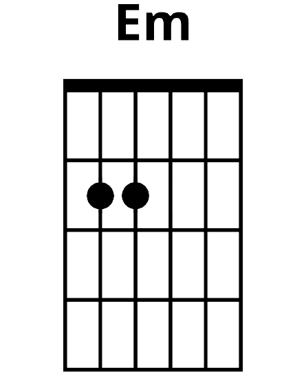
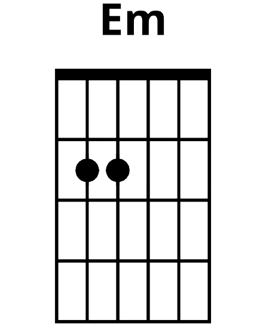

The past few lessons have been hectic with lots of new songs and chords being introduced. If you're
feeling overwhelmed by the workload of it then this is your opportunity to take a breather and get to
grips with some new material we've covered over the past few weeks. Let's try a chord warmup before
running through scales and songs.
If you feel comfortable with the pace of the past few weeks, feel free to roll forward to
lesson 17 and work ahead. Perhaps you've had
a lot on in your personal and/or professional life recently. This could be the perfect chance to take
some time to focus on yourself and your hobbies.
We have recently covered major, minor, major seventh and minor seventh chords. See the list below for the relevant chord name depending on which fret you're holding. I will also post diagrams of the E major, E minor, E major seventh and E minor seventh. This gives you an extra chance to get used to bar chords before launching headfirst into a few songs.
 


Now it's time to go to the songbook and play through some of your favourite songs. You can play as many as you like but try to play at least a half dozen songs to vary the pace and chords you're playing. Feel free to stick to easier songs if you're very busy this week or some tougher ones if you'd like a challenge. If you don't like any of the songs listed within the songbook, find some suitable songs online to play that you prefer as a substitute. All songs are listed by which lesson they were added in so this allows you to work from easier to harder songs if you so choose.
Now that you've had plenty of times to practice chords alone and as part of songs, let's look at the melody side of music as opposed to the harmony side. Next week will focus more on melodies, scales, tabs and arpeggios as we have neglected these the past few weeks. There will also be a bit of theory mixed in with this.
C Major Scale

A Major Scale

D Major Scale

E Major Scale

C Major Arpeggio